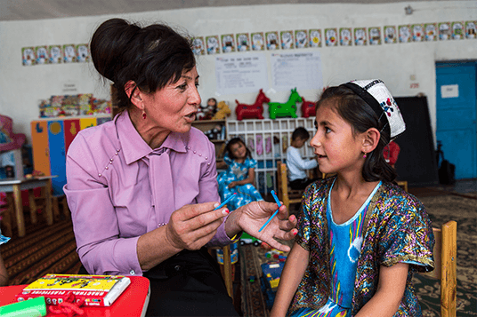
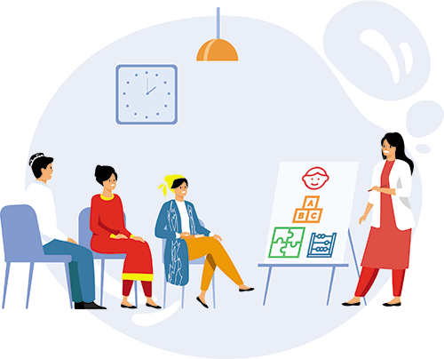

Educators
Whether you work with babies and toddlers in a day care, or with pre-school aged children in an early childhood or pre-k center, the resources in this section are designed for you. You will find high quality content for young children to engage in across a variety of domains, from language and literacy to play and creativity. You will also find professional development courses and articles to support your own growth and development.
How do educators use Magic Box digital platform?
From working on managing their emotions to learning about letters, sounds and numbers, pre-school aged children are busy learning every day. If you are an early childhood educator, you will find high quality resources here to support your work with pre-school aged children. Lesson plans, activities and games, tips and guidance and professional development courses are organized by age and learning domains including social-emotional learning, play and creativity, early math and problem solving and language, literacy and communication.

Courses for Educators
In this section you will find professional development courses covering a range of topics, including:
- creating an inclusive learning environment for children with disabilities and from minorities
- understanding child development and how to ensure young children grow and develop to their full potential
- supporting young children’s social-emotional growth and preparing them for life’s challenges